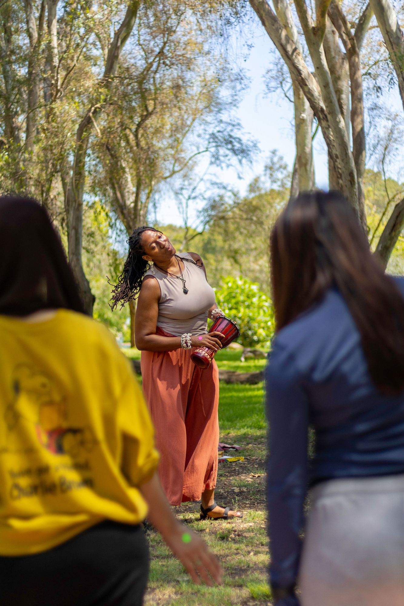
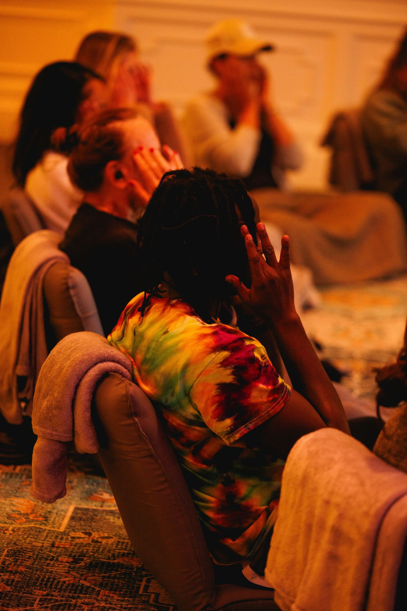

Ndidi Breathwork™
Rooted in Igbo Wisdom
Guided through breath, movement, sound, and community — a journey back to peace, strength, and joy for yourself, your team or community.

What Is Ndidi Breathwork™
Ndidi (n-DEE-dee) is Igbo for steadfastness, patient endurance, and the quiet strength to return to your true self. This community healing practice combines breath, sound and movement with live African instruments and music to help you remember who you are at the core. It is a one-of-a-kind experience!
Harmony, rest, inner peace
Inner power, vitality, agency
Delight, laughter, aliveness
I remain grounded. I persist with gentleness. I return to myself.

Meet Your Guide
Nnemoma Chukwumerije, LMSW — African-Centered Breathwork Guide & Life CoachNnemoma is a medicine woman, breathwork guide, energy healer, and life coach — leading every session as a licensed social worker (LMSW, Columbia), trained in trauma-informed facilitation. Her path didn't start in a wellness space — it started in a cubicle, doing everything "right" as the firstborn daughter of Nigerian immigrants, quietly depressed the whole time. Breathwork moved what nothing else could. Today she leads Ndidi Breathwork™ for conferences, schools, retreats, companies, and communities worldwide.
How This Helps Participants
Breathwork works through the nervous system, not just the mind — discharging stress, quieting the inner critic, creating space for real clarity. Sound and movement carry that further, out of the head and into the body. Rooted in Igbo tradition rather than borrowed from it, this practice carries an ancestral depth and specificity you won't find in a generic breathwork class.
Individuals
A private return to yourself, away from who you have to be for everyone else
Teams
More present and connected than an icebreaker could manage
Conferences
The genuine reset people remember after the keynote is forgotten
Students/Staff
A rare invitation to slow down and practice self-awareness
Retreats
The anchor experience that turns strangers into a room that breathes together
Facilitator Training
Learn to guide Ndidi Breathwork™ yourself — a certification path for practitioners ready to carry this medicine to their own communities.
What A Session Looks Like
Shaped to fit the room — a boardroom, a retreat lawn, a conference stage.
Breathwork
Guided conscious connected breathing, shifting the nervous system into release
Sound
Live instruments, music and voice, helping the body release what words can't reach
Movement
Free flowing movement and dance, returning people to their bodies
Community
Practiced in circle, where the real shift happens
Reflection
Guided prompts turning what surfaced into clarity and intention
Testimonials
"The breathwork session with Nnemoma was nothing short of transformative. I felt safe, held, and supported."

"Nnemoma's session in Costa Rica was absolutely transformational. Her energy is light, divine, a breath of fresh air."
Ways To Work Together
Corporate Wellness · Retreats · Workshops · Facilitator Training
60-Minute Workshop
Team offsites, conference breakouts, single-day wellness pushes. A nervous-system reset and a simple breath practice. In-person or virtual.
Half-Day Immersion
Leadership retreats, school in-service days, deeper team-culture work. A full arc through breath, sound, movement, and reflection.
Custom Experience
Multi-day conferences, recurring corporate programs, school partnerships. A shaped-to-you container. In-person or virtual.
Pricing varies by group needs
Looking For 1:1 Sessions?
Sometimes the room you need to breathe in is just you.
This 45-minute private session gives space to set an intention, breathe through what's in the way, and leave with clarity on your next step.
- Intention setting
- Guided conscious connected breathwork
- Sound and rhythm
- Closing journaling
45 minutes · $70
Book Your 1:1 Session →